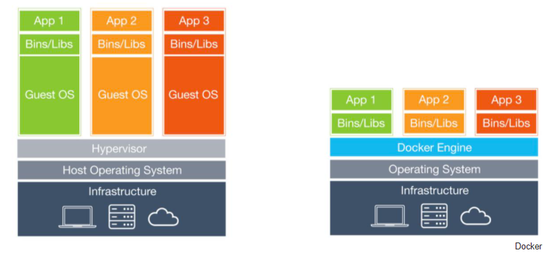

Docker is a software platform for building applications based on containers — small and lightweight execution environments that make shared use of the operating system kernel but otherwise run in isolation from one another. While containers as a concept have been around for some time, Docker, an open source project launched in 2013, helped popularize the technology, and has helped drive the trend towards containerization and microservices in software development that has come to be known as cloud-native development.
One of the goals of modern software development is to keep applications on the same host or cluster isolated from one another so they don’t unduly interfere with each other’s operation or maintenance. This can be difficult, thanks to the packages, libraries, and other software components required for them to run. One solution to this problem has been virtual machines, which keep applications on the same hardware entirely separate, and reduce conflicts among software components and competition for hardware resources to a minimum. But virtual machines are bulky—each requires its own OS, so is typically gigabytes in size—and difficult to maintain and upgrade. Containers, by contrast, isolate applications’ execution environments from one another, but share the underlying OS kernel. They’re typically measured in megabytes, use far fewer resources than VMs, and start up almost immediately. They can be packed far more densely on the same hardware and spun up and down en masse with far less effort and overhead. Containers provide a highly efficient and highly granular mechanism for combining software components into the kinds of application and service stacks needed in a modern enterprise, and for keeping those software components updated and maintained.
Docker is an open source project that makes it easy to create containers and container-based apps. Originally built for Linux, Docker now runs on Windows and MacOS as well. To understand how Docker works, let’s take a look at some of the components you would use to create Docker-containerized applications.
Each Docker container starts with a Dockerfile. A Dockerfile is a text file written in an easy-to-understand syntax that includes the instructions to build a Docker image (more on that in a moment). A Dockerfile specifies the operating system that will underlie the container, along with the languages, environmental variables, file locations, network ports, and other components it needs—and, of course, what the container will actually be doing once we run it. Paige Niedringhaus over at ITNext has a good breakdown of the syntax of a Dockerfile.
While building containers is easy, don’t get the idea that you’ll need to build each and every one of your images from scratch. Docker Hub is a SaaS repository for sharing and managing containers, where you will find official Docker images from open-source projects and software vendors and unofficial images from the general public. You can download container images containing useful code, or upload your own, share them openly, or make them private instead. You can also create a local Docker registry if you prefer. (Docker Hub has had problems in the past with images that were uploaded with backdoors built into them.)
Read more